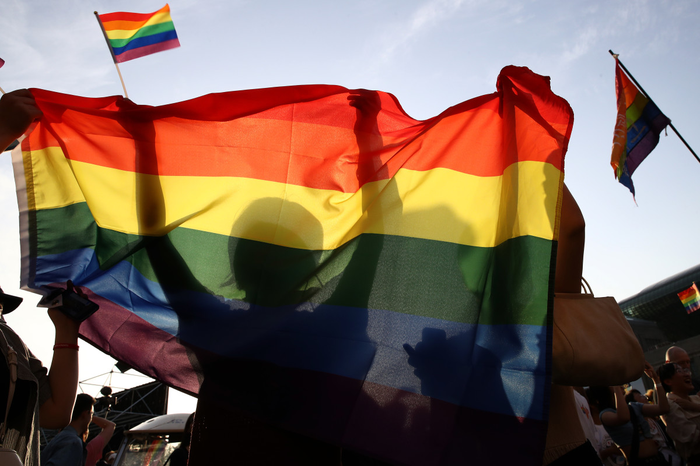

The Intersectionality Between Being Asian and Queer
To many Asian Americans, the process of coming out brings along a multitude of complications, both within their families and in the queer community itself.
Firstly, many Asian American families have lasting ties to traditional, cultural, and religious values that clash with queer identities, with many in the Asian American community looking down upon queerness as something shameful and disgraceful. In general, much of the scorn aimed at homosexuality stems from a lack of education and a stubborn refusal to look deeper into the subject that originates from their belief in their traditional family values that they have known for their whole lives. For the children themselves, the idea of filial piety that is commonplace within Asian American families, or the idea of respecting and repaying their elders, has a lasting impact on coming out. As a result of filial piety, those that identify as queer may struggle over the idea of dissapointing or bringing shame to their parents who have sacrificed so much for them and the privileging of individual identity over family honor. In addition, in the eyes of the parents, being queer could hamper their ability to carry out their respective gender roles of carrying on the family lineage or to marry a good spouse. As such, the fear of the consequences of coming out, such as rejection or alienation by their family, can compromise their decision to do so, with some even hiding their sexuality and end up in a heterosexual marriage.
Secondly, not only do queer Asian Americans have to deal with family acceptance and values, but they also have to deal with stereotypes and discrimination within the queer community. The queer community is one that is predominately white, and there have reports of Asian members experiencing racism from the white members. In a sense, queer Asian Americans are a “double minority”, unable to fit into Asian communities nor the predominately white queer community. Additionally, the racial stereotypes on the characteristics of Asian men and women also contribute to their inability to integrate fully into queer society. Asian men are stereotyped as feminized and unattractive to other men in comparison to the typical white male, while Asian women likewise faced similar issues with their stereotypes of being submissive and hypersexualized contrasting traditional lesbian images. In both cases, the intersectionality of race and gender result in the continued discimination within a community that is meant to provide solace.